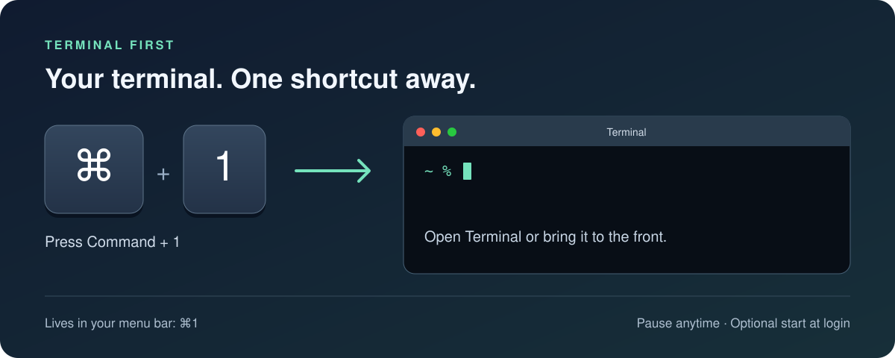

Your terminal.
One shortcut away.
Press ⌘1 from any app to open Apple Terminal or bring it to the front. Terminal First sits quietly in your menu bar, ready when you need it.

One familiar shortcut
No searching for windows. Use Command + 1 to get back to Apple Terminal.
You're in control
Pause the shortcut from the menu bar, or enable Start at Login to have it ready when you sign in.
Stays on your Mac
No network access or keystroke recording. No Accessibility or Input Monitoring permission needed.
Download. Drag.
Press ⌘1.
One download for Intel and Apple Silicon Macs. No build tools needed.
Download for Mac- Download and open Terminal-First-1.1.dmg.
- Drag Terminal First onto the Applications folder inside the installer.
- Open Terminal First from Applications. If macOS blocks it, and you trust this download, go to System Settings → Privacy & Security → Open Anyway. This free build is not Apple notarized.
- Look for ⌘1 in the menu bar and press Command + 1. You can eject the installer after copying the app.
What if macOS blocks the app?
The build is locally signed and is not Apple notarized. If you trust your copy, attempt to open it, then use System Settings → Privacy & Security → Open Anyway. Managed Macs may prohibit this. Do not disable Gatekeeper.
What happens to my existing Command + 1 shortcut?
While active, Terminal First takes priority over ordinary app shortcuts and uses the physical 1 key on the main keyboard. Pause or quit it to restore normal behavior. If another global shortcut utility owns ⌘1, the app reports the conflict. Disable that binding, then choose Enable ⌘1. See the README for migrating from the earlier Terminal helper.
How do I remove it?
Turn off Start at Login, quit Terminal First, then move the app to Trash.